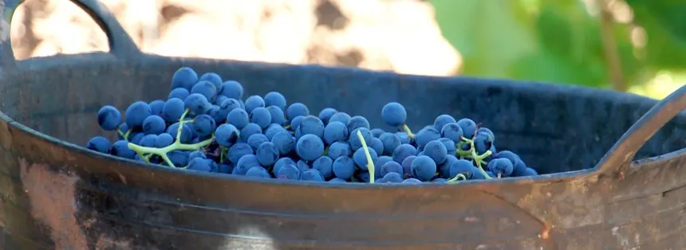
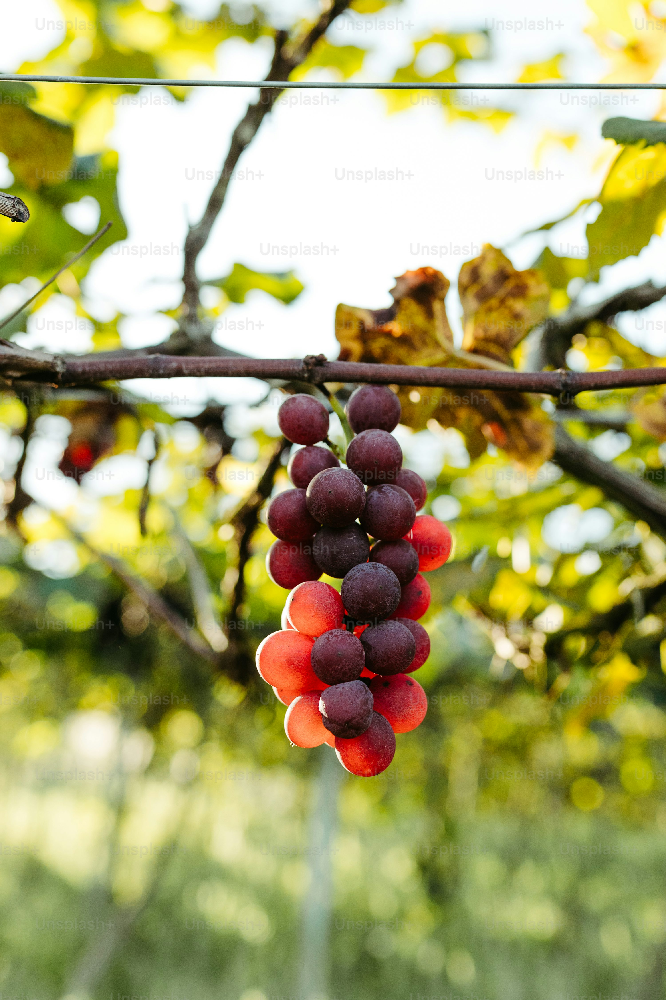

TEMPRANILLO
Descubre el Alma
Descubre el Alma
Nuestra devoción es cultivar el Tempranillo con mínima intervención. En Cariñena, dejamos que la tierra hable por sí misma, permitiendo que cada racimo exprese su verdadera identidad, su fuerza y la elegancia pura de nuestro terroir extremo.
Las pieles gruesas de nuestro Tempranillo aportan ese color rubí profundo y los aromas a frutos negros que nos caracterizan desde hace generaciones.


Nuestra historia está escrita en los suelos pedregosos y arcillosos que fuerzan a nuestras viñas a buscar el agua en lo más profundo, forjando gran carácter.

En la penumbra reposan barricas de roble francés y americano. Aquí el Tempranillo afina sus taninos y adquiere inconfundibles notas a vainilla, cuero y especias.
Desde la intensidad de nuestros Jóvenes hasta la majestuosidad de los Reservas.
Visitar Tienda →